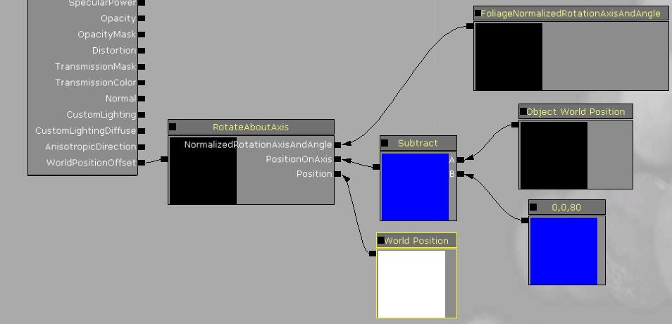

UDN
Search public documentation:
InteractiveFoliageActorJP
English Translation
中国翻译
한국어
Interested in the Unreal Engine?
Visit the Unreal Technology site.
Looking for jobs and company info?
Check out the Epic games site.
Questions about support via UDN?
Contact the UDN Staff
中国翻译
한국어
Interested in the Unreal Engine?
Visit the Unreal Technology site.
Looking for jobs and company info?
Check out the Epic games site.
Questions about support via UDN?
Contact the UDN Staff
InteractiveFoliageActor
ドキュメント概要: InteractiveFoliageActor の使用法に関する情報。 ドキュメントの変更ログ: Daniel Wright により作成。概観
InteractiveFoliageActor は、QA_APPROVED_BUILD_DEC_2009 (2009 年 12 月 QA 承認ビルド) の時点で新しいアクタ タイプです。これは、事実上押されたり、撃たれたりすることで力を受ける静的メッシュで、これらをバネ システムに適用します。この結果が、FoliageNormalizedRotationAxisAndAngle ノードに送られます。このノードは、WorldPositionOffsetJP に接続し、最小限のパフォーマンスへの影響でメッシュをアニメーション化することができます。簡単なセットアップ
- Content ブラウザで静的メッシュを選択します。静的メッシュに衝突は必要ありません。
- エディタ ビューポートで、右クリックをして Add Actor (アクタを追加) -> Add InteractiveFoliageActor (InteractiveFoliageActor を追加) を選択します。
- WorldPositionOffsetJP に影響を与える FoliageNormalizedRotationAxisAndAngleJP を使用するのに、マテリアル セットアップを適用します。
簡単なマテリアル セットアップ
起動しなければいけないのは、以下に見て分かるように WorldPositionOffsetJP に影響を与える FoliageNormalizedRotationAxisAndAngle のみです。RotationAboutAxis ノードを使用して、この軸の周りでオブジェクトを回転させます。
Object World Position からの減算は、ワールド空間で下に回転されるポイントを移動することになります。このセットアップで、茂みを横にどけることができ、力をかけるのをやめると、跳ね返って元の位置に戻るようになります。


もちろん、スクリーンショットはアニメーションをうまく伝えることができないので、これらのビデオだと結果がより分かりやすいでしょう。
WalkingThroughFields.mp4
Explosions.mp4
高度なマテリアル セットアップ
回転がメッシュのパーツを異なるように影響するようにするには、RotateAboutAxis に送られる Angle (角度) を変更します。例えば、硬さをコントロールする頂点カラーにウェイトを格納し、これを使用して角度を減衰させることができます。FoliageImpulseDirectionJP ノードもあり、これは、バネの中心からシミュレートされるバネの位置に、ベクトルとしてそのままのバネのオフセットを提供します。これは、回転を使用してアニメーションしたくない場合に便利です。以下は、メッシュの異なるパーツの回転軸を変更するために、頂点カラーからオフセットを使用するマテリアルの例です。

上記のマテリアルのカスタム ノードは以下の通りです。

アクション状態のマテリアルのビデオは以下にあります。メッシュのパーツに触ったときに、それらがどのように異なる方向に回転するかに注目してください。これは、触ったときに特定の方向でなく、あいまいに動いて欲しいようなフォリッジ タイプに便利です。 AdvancedAnimation.mp4
最善の結果を出すためには、アンビエント ウィンド アニメーションとともに用いることを忘れないでください。WindDirectionAndSpeed ノードは、オブジェクト間のウィンド アニメーションをコーディネートするのに便利です。
バネ物理設定
各 InteractiveFoliageActor は、バネがどのように挙動するかをコントロールできるような設定を持っています。例えば、キャラクターが触ったときに、バネが十分動いていなかったら、FoliageTouchImpulseScale を増加させてみてください。
- FoliageDamageImpulseScale - ダメージ イベントから適用される力をスケールします。
- FoliageDamping - 振動するにつれてバネによって失われるエネルギーの量を決定します。この力は、空気摩擦に似ています。
- FoliageStiffness - バネの中心に向けて押す力の強さを決定します。
- FoliageStiffnessQuadratic - FoliageStiffness と同様ですが、この力の強さはバネの中心への距離の 2 乗とともに増加します。この力は、触れることやダメージ力によって、バネが特定のポイント以上に伸びることを防ぐのに使用されます。
- FoliageTouchImpulseScale - 触るイベントから適用される力をスケールします。
- MaxDamageImpulse - 適用される各ダメージ力の大きさをクランプします。
- MaxForce - 各アップデートで適用される組み合わさった力の大きさをクランプします。
- MaxTouchImpulse - 適用される各触る力の大きさをクランプします。
制限
- 現在、InteractiveFoliageActor は投射武器をブロックします。これは、PassThroughDamage がまだ尊重されていないためです。
- WorldPositionOffsetJP は、アニメーションに使用されるので、その制限のすべてが適用されます。InteractiveFoliageActor はビジュアルのみのエフェクトを提供します。
パフォーマンスとのかかわり合い
InteractiveFoliageActor は、パフォーマンス オーバーヘッドをほとんど起こしません。これらは事実上、事前演算済みライティングを持った静的メッシュであり、静的メッシュはレンダリングするのがもっとも速いメッシュのタイプです。唯一の大きな違いは、InteractiveFoliageActor は衝突円柱を持っていることです。これは、衝突オクトリーにあり、Touch と TakeDamage イベントを受信します。InteractiveFoliageActor は、以前フォリッジに静的メッシュを配置していたようなところすべてに使用できるようにデザインされています。トラブルシューティング
アクタに適用される力を計算するのに使用される InteractiveFoliageActor の衝突円柱を見るには、ゲーム、または PIE で 'show collision (衝突を表示)' を使用します。触ったときに方向が変更しているかどうかをデバッグするには、FoliageImpulseDirection を Emissive にプラグインするマテリアルを単純化することができます。
アクタが爆発の影響を受けていない場合は、アクタ Location が地上にあることを確認してください。爆発は、ダメージを適用する前に、各アクタの Location へラインチェックを行います。アクタの Location がどこであるかは、移動ウィジェットをエディタで選択した際に、それがどこに描かれているかで分かります。PrePivot をアクタに適用することで、Location をメッシュ上の高い位置に移動する (Display カテゴリで) ことができ、その後埋め合わせるためにメッシュを変換します。